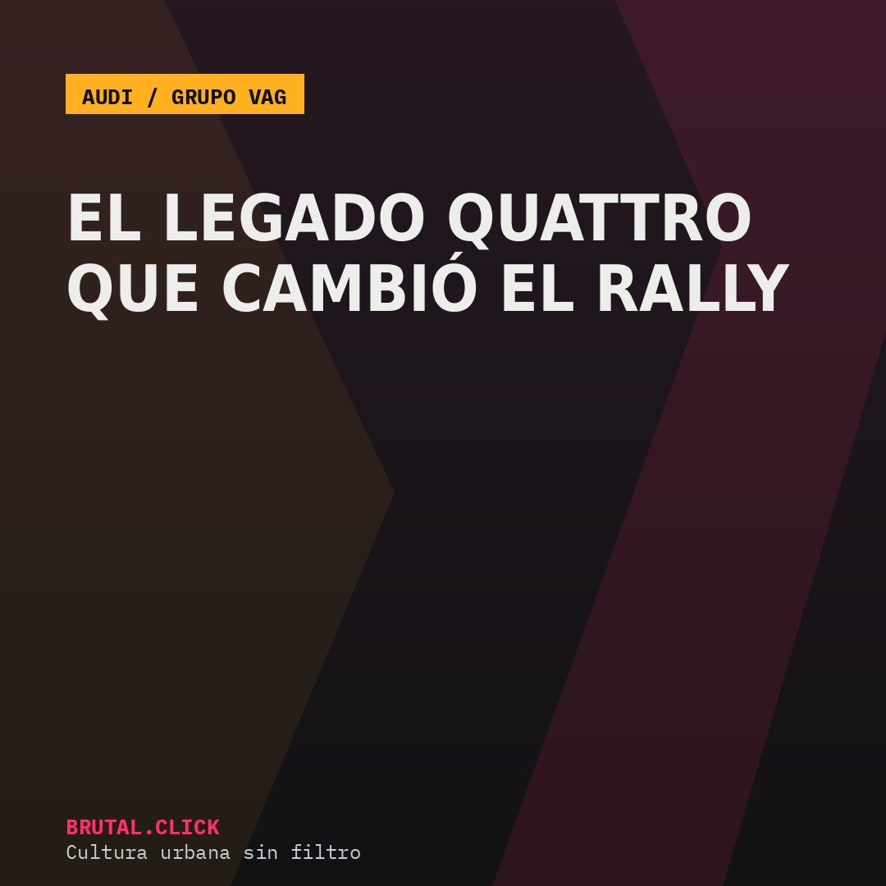
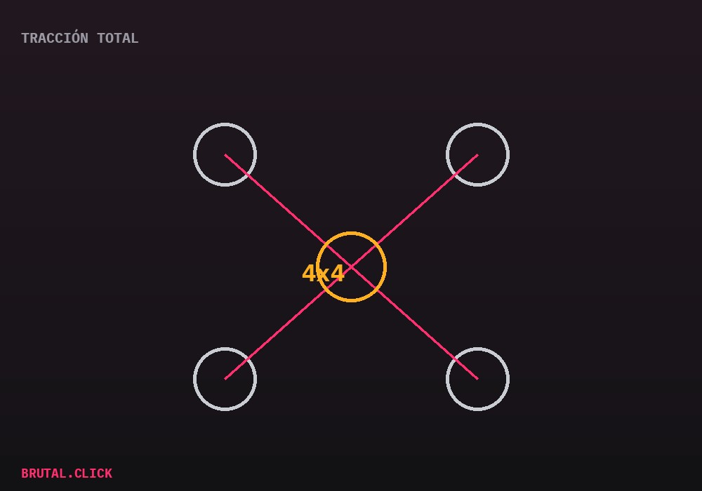

Este artículo incluye enlaces de afiliación a productos relacionados (modelos a escala, libros). No hay comisión posible por la venta de vehículos nuevos. Si compras a través de estos enlaces, podemos recibir una pequeña comisión sin coste extra para ti.

El Grupo VAG (Volkswagen Auto Group) es uno de esos casos donde el aficionado medio no siempre es consciente de la magnitud real de lo que está mirando. Bajo ese mismo techo corporativo conviven Audi, Volkswagen, SEAT, Škoda, Porsche y Lamborghini — marcas que en el imaginario popular ocupan segmentos completamente distintos, pero que comparten plataformas, motores y, en algunos casos, tecnología de tracción.
El momento que lo cambió todo: 1980
La pieza central de esta historia es el sistema quattro de Audi, presentado en el Audi Quattro de 1980. Antes de esa fecha, la tracción total se consideraba una solución pesada, reservada a todoterrenos y vehículos militares — poco apropiada para la competición de asfalto por el sobrepeso que añadía.

Audi demostró lo contrario en el Campeonato Mundial de Rally: la tracción a las cuatro ruedas ofrecía tal ventaja de agarre en superficies sueltas que, en pocas temporadas, el resto de fabricantes se vieron obligados a desarrollar sus propios sistemas de tracción total para seguir siendo competitivos. Es uno de los pocos casos en la historia del motorsport en los que una sola tecnología redefinió las reglas no escritas de toda una categoría.
Por qué importa hoy, no solo en 1980
El legado quattro no se quedó en los coches de rally de los 80. Hoy sigue siendo el sistema de referencia en buena parte de la gama Audi, y la ingeniería de tracción total desarrollada entonces ha influido directa o indirectamente en cómo el resto de marcas del grupo —incluida Lamborghini en sus modelos de tracción total— reparten la potencia entre ejes.
Modelo a escala Audi Quattro Rally 1:18
El coche que cambió el rally, en tu estanteríaLibro: historia del Grupo Audi en el Mundial de Rally
Para entender por qué quattro lo cambió todoEnlaces pendientes de activar el programa de afiliados.